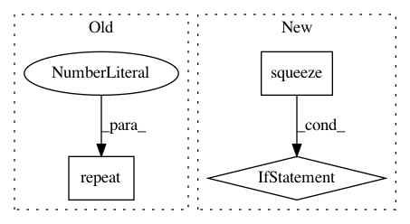

fbc57241b529ce921d664d86685935c4d3219feb,gpytorch/likelihoods/noise_models.py,HomoskedasticNoise,forward,#HomoskedasticNoise#Any#,18
Before Change
log_noise = self.log_noise
p = params[0] if isinstance(params, list) else params
n = p.shape[-2] if len(p.shape) > 1 else p.shape[-1]
log_noise_diag = log_noise.repeat(n, 1)
return DiagLazyTensor(log_noise_diag)
class MultitaskHomoskedasticNoise(HomoskedasticNoise):
After Change
)
def forward(self, params):
log_noise = self.log_noise.squeeze(0).exp()
p = params[0] if isinstance(params, list) else params
shape = p.shape if len(p.shape) == 1 else p.shape[:-1]
if log_noise.ndimension() > len(shape):
raise RuntimeError("Must provide batched input if in batch mode")
if log_noise.shape[-1] > 1: // deal with multi-task case
shape = shape + torch.Size([log_noise.shape[-1]])
log_noise_diag = log_noise.expand(shape)
return DiagLazyTensor(log_noise_diag)
In pattern: SUPERPATTERN
Frequency: 4
Non-data size: 3
Instances
Project Name: cornellius-gp/gpytorch
Commit Name: fbc57241b529ce921d664d86685935c4d3219feb
Time: 2018-11-05
Author: balandat@fb.com
File Name: gpytorch/likelihoods/noise_models.py
Class Name: HomoskedasticNoise
Method Name: forward
Project Name: geomstats/geomstats
Commit Name: eb52df01d6fa9beb97d367ff091d32186c91ea95
Time: 2020-04-09
Author: gerald@pop-os.localdomain
File Name: geomstats/geometry/poincare_ball.py
Class Name: PoincareBallMetric
Method Name: log
Project Name: geomstats/geomstats
Commit Name: ba9524030335193a49f0745be632fbe229e7614d
Time: 2020-04-09
Author: gerald@pop-os.localdomain
File Name: geomstats/geometry/poincare_ball.py
Class Name: PoincareBallMetric
Method Name: log
Project Name: OpenNMT/OpenNMT-py
Commit Name: 614c41e7f05d274991d95271c49a87af3fa2cf49
Time: 2017-12-22
Author: skywalker@postech.edu
File Name: onmt/Loss.py
Class Name: NMTLossCompute
Method Name: compute_loss